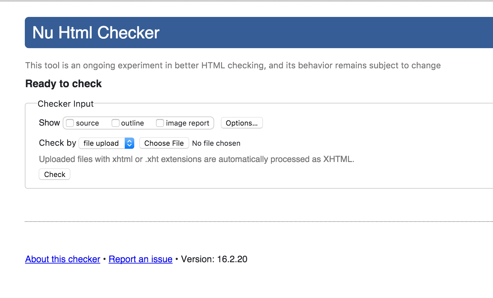

How to Validate Your Webpage
A website to help you start validating your webpages!
Things to Check Before Validating
- That you have saved your file
- That the file you have has the correct extension (ex. html or css)
Steps for Validation
- Head to this validator website for the HTML validator or this validator for the CSS validator
- Make sure that the method of checking your webpage is the correct one (ex. HTML doc would be through file upload)
- Either select the correct file from your computer to check or input the URL to reference your website
- (Optional) Select if you want to show the ‘source, outline or image report’
- Press the ‘check button’

screen capture: HTML validator (n.d). Retrieved from https://validator.w3.org/nu/#file
Important Terms
- HTML Validator
- a website where designers can upload the file containing the code for a page under development, or specify the universal resource identifier (URI) for a published page to receive a diagnostic report for as to whether or not the page adheres to the standards
- Computer
- a programmable electronic device that processes information
- Information
- words, numbers, pictures, and sounds which have meaing to us
Cool Sites!
Yay! Now that you've finally finished validating your webapge or HTML document, how about checking out this awesome webpage about sandwiches!

image: Grote Company: Precision Slicing and Application Systems. (n.d.). Retrieved from http://www.grotecompany.com/applications/sandwich-production/
Or you can check this out for great cat pictures!
To reference all the special character entities, check out this site for a comprehensive list of them.
© Random website 2016